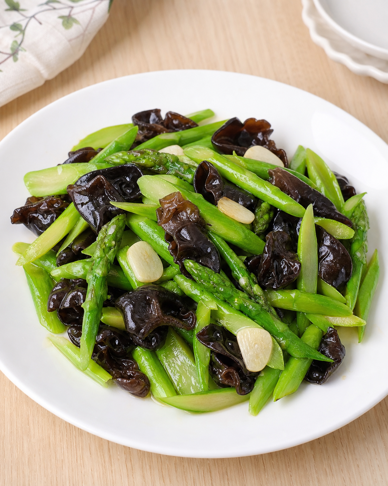

← 返回目錄
云耳炒露筍
低熱量、高營養的家常素菜，口感爽脆，適合做清盈晚餐配菜。

材料
露筍
1 扎（約 200–250g）。
雲耳
（乾）15–20g，或新鮮雲耳 150g。
薑 1 小舊，切片。
蒜蓉 1–2 湯匙。
素食蠔油 1–2 湯匙。
清水 50–100ml。
菇粉或鹽 少許。
油 2 湯匙。
做法
雲耳用清水浸軟約 10 分鐘，洗淨後瀝乾；露筍切去尾部約 1 吋，尾段老皮可輕刨，再斜切成段。
可先將露筍放入滾水中加少許鹽焯約 2 分鐘，再過冷河，保持翠綠爽脆。
燒熱鑊，下油，以大火爆香蒜蓉及薑片。
加入露筍及雲耳快炒，注入約 50ml 清水，蓋上鑊蓋煮約 3 分鐘。
加入素食蠔油及少許菇粉或鹽調味，炒勻後即可上碟。
營養價值
露筍每 100g 約 20 kcal，屬低熱量蔬菜。
露筍含維生素 K、葉酸、鉀與膳食纖維。
雲耳熱量低，並含鐵質、膳食纖維及多醣類成分。
整體配搭清爽低脂，適合想食得輕盈的人士。
食療功效 / 常見作用
露筍有助補充纖維，配合雲耳可增加飽足感。
雲耳常見作為清腸胃、配合均衡飲食的家常食材。
整道菜油膩感較低，適合日常配飯或作晚餐蔬菜菜式。
飲食提示
露筍唔好炒太耐，保持爽嫩口感會更好食。
雲耳浸發後要洗乾淨，尤其皺摺位置。
想更香口可加少量蒜片，但唔建議落太多調味避免蓋過菜味。
適合配搭
可配白飯、糙米飯、豆腐、蒸蛋或其他清淡家常菜。
亦可加入鮮百合、秀珍菇或白果作變化。
不適合人士注意
痛風或尿酸偏高人士不宜一次食太多露筍。
對菇菌類或木耳類食材敏感人士應避免食用。